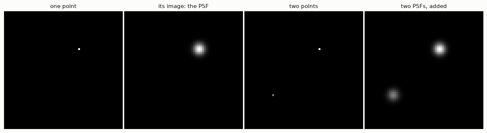
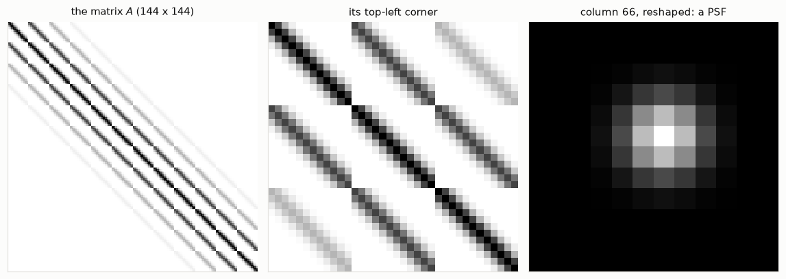
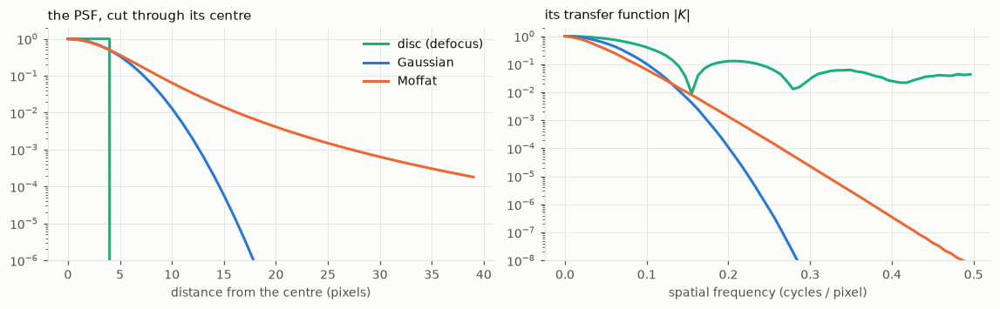
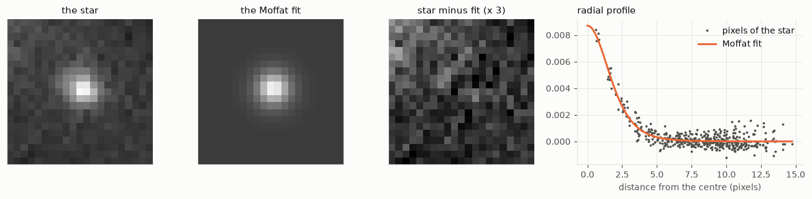
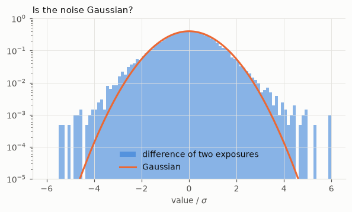
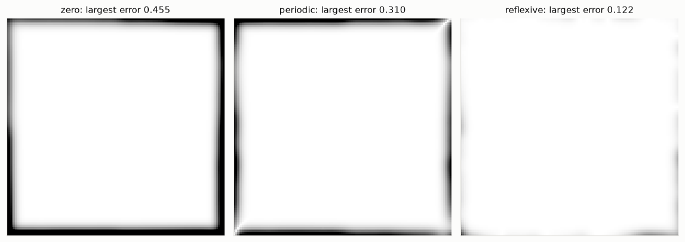

import numpy as np
from scipy import ndimage, optimize
import matplotlib.pyplot as plt
import hnotools as hno
hno.style()
rng = np.random.default_rng(0)
data = hno.load_sample()3 The blurring function
Companion notebook to Hansen, Nagy & O’Leary, Deblurring Images, chapter 3.
What you will take away
- The point-spread function (PSF) is the image of a point. It contains everything there is to know about a spatially invariant blur.
- The columns of the blurring matrix \(A\) are shifted copies of the PSF.
- A PSF can come from a physical model (defocus, atmosphere) or, better, be measured on the data: in astronomy every star is a free point source.
- Noise has a physical origin too, and it tells us how much to trust each measurement.
- A picture is a window on a larger scene. What we assume about the scene outside the window, the boundary condition, changes the matrix \(A\).
3.1 The PSF is the image of a point
Blur an image that is black except for one bright pixel. What comes out is, by definition, the PSF, centred where the pixel was.
point = np.zeros((64, 64)); point[20, 40] = 1.0
psf_small = hno.gaussian_psf((15, 15), fwhm=5.0) # a 15 x 15 array holding the PSF
blurred_point = ndimage.convolve(point, psf_small, mode='constant')
two_points = point.copy(); two_points[45, 15] = 0.5
blurred_two = ndimage.convolve(two_points, psf_small, mode='constant')
hno.show([point, blurred_point, two_points, blurred_two],
['one point', 'its image: the PSF', 'two points', 'two PSFs, added'], lo=0, hi=100, gamma=1);
Because blurring is linear, the image of any scene is the sum of the PSFs of all its points, each weighted by the brightness of the point. That operation has a name: convolution, written \(b = k * x\).
Two properties of a physical PSF that we will rely on:
- it is non-negative (light cannot be subtracted);
- it sums to one if the blur neither creates nor loses light.
print('minimum of the PSF:', psf_small.min(), ' sum of the PSF:', psf_small.sum())
print('total light before:', two_points.sum(), ' after:', round(blurred_two.sum(), 12))minimum of the PSF: 6.729172487219203e-07 sum of the PSF: 1.0000000000000002
total light before: 1.5 after: 1.53.2 The matrix behind the convolution
Notebook 1 showed the matrix of a 1-D blur. Let us build the matrix of a 2-D blur, on an image small enough to afford it: \(12 \times 12\) pixels, hence \(A\) of size \(144 \times 144\).
To write \(b = A x\) the image must become a vector. Here the book and NumPy differ. MATLAB stacks the columns of the image; NumPy’s ravel() stacks the rows. Both are fine as long as you are consistent. We use NumPy’s order.
Column \(j\) of \(A\) is what \(A\) does to the \(j\)-th unit vector, that is, to an image with a single bright pixel. So column \(j\) is the PSF centred on pixel \(j\), flattened.
n = 12
psf_tiny = hno.gaussian_psf((7, 7), fwhm=3.0)
def build_matrix(n, psf, mode):
"""Blurring matrix of an n x n image, one column per pixel."""
A = np.zeros((n * n, n * n))
for j in range(n * n):
unit = np.zeros(n * n); unit[j] = 1.0
A[:, j] = ndimage.convolve(unit.reshape(n, n), psf, mode=mode).ravel()
return A
A = build_matrix(n, psf_tiny, 'constant')
fig, ax = plt.subplots(1, 3, figsize=(10.5, 3.6))
ax[0].imshow(A, cmap='gray_r'); ax[0].set_title('the matrix $A$ (144 x 144)')
ax[1].imshow(A[:36, :36], cmap='gray_r'); ax[1].set_title('its top-left corner')
ax[2].imshow(A[:, 5 * n + 6].reshape(n, n), cmap='gray'); ax[2].set_title('column 66, reshaped: a PSF')
for a in ax:
a.set_xticks([]); a.set_yticks([]); a.grid(False)
fig.tight_layout()
x_test = rng.random((n, n))
print('A x equals the convolution:', np.allclose(A @ x_test.ravel(), ndimage.convolve(x_test, psf_tiny, mode='constant').ravel()))A x equals the convolution: True
\(A\) is made of blocks, each block is a band: bands inside bands. This regular structure is why we will never need to store \(A\); notebook 4 turns it into fast algorithms.
3.3 Where PSFs come from: three models
- Out-of-focus blur: a point becomes a uniform disc.
- Gaussian blur: a convenient mathematical model, and a fair one for the sum of many small independent blurs.
- Moffat blur: the shape of a star seen through the turbulent atmosphere with a long exposure. It has a Gaussian-like core and much wider wings, \(\;k(r) \propto \bigl(1 + r^2/\alpha^2\bigr)^{-\beta}\). This is the PSF of our telescope images.
The three PSFs below have the same full width at half maximum, 8 pixels.
shape = (129, 129)
yy, xx = np.indices(shape) - 64
disc = (np.hypot(xx, yy) <= 4.0).astype(float); disc /= disc.sum()
gauss = hno.gaussian_psf(shape, 8.0)
moffat = hno.moffat_psf(shape, 8.0, beta=2.5)
fig, ax = plt.subplots(1, 2, figsize=(10.5, 3.3))
r = np.arange(0, 40)
for psf, name, col in ((disc, 'disc (defocus)', hno.AQUA), (gauss, 'Gaussian', hno.BLUE), (moffat, 'Moffat', hno.ORANGE)):
ax[0].semilogy(r, psf[64, 64:64 + 40] / psf[64, 64], color=col, label=name)
nu, otf = hno.radial_profile(hno.psf2otf(psf))
ax[1].semilogy(nu, otf, color=col, label=name)
ax[0].set_ylim(1e-6, 2); ax[0].set_xlabel('distance from the centre (pixels)')
ax[0].set_title('the PSF, cut through its centre', loc='left'); ax[0].legend()
ax[1].set_ylim(1e-8, 2); ax[1].set_xlabel('spatial frequency (cycles / pixel)')
ax[1].set_title('its transfer function $|K|$', loc='left')
fig.tight_layout()
Same width, three very different inverse problems. Read the right-hand plot of Figure 3.3 with Figure 1.4 in mind: wherever \(|K|\) is small, the data hold no usable information.
- The Gaussian kills high frequencies fastest: the hardest to invert.
- The Moffat keeps a little of everything: its wide wings in image space are the price of a transfer function that decays slowly.
- The disc has a transfer function that oscillates and dips to zero at regular intervals: some frequencies are erased exactly. (The dips do not quite reach zero on the plot because a disc drawn on a pixel grid is not perfectly round.)
3.4 Measuring the PSF on the data
Models are useful, measurements are better. A star is so far away that it is a perfect point source, so each star in an image is a picture of the PSF, with some noise. Let us find stars in one of our exposures, cut one out, and fit a Moffat profile to it.
frame = data['subs'][1].astype(float) # an exposure in median seeing
stars = hno.find_stars(frame, n=8)
for row, col, peak in stars:
print(f'star at row {row:3d}, column {col:3d}, peak {peak:.3f}')star at row 72, column 233, peak 0.548
star at row 152, column 150, peak 0.336
star at row 161, column 169, peak 0.010
star at row 98, column 217, peak 0.006
star at row 86, column 217, peak 0.005
star at row 124, column 216, peak 0.004
star at row 202, column 223, peak 0.004
star at row 210, column 88, peak 0.003The two brightest are saturated: the camera reached its maximum and clipped them, so they no longer show the true shape of the PSF. We take the brightest star that is safely below saturation.
row, col, peak = next(s for s in stars if s[2] < 0.25 * stars[0][2])
h = 10
stamp = frame[row - h:row + h + 1, col - h:col + h + 1]
def moffat_model(p, yy, xx):
"""Circular Moffat on a constant background. p = amplitude, y0, x0, alpha, beta, background."""
amp, y0, x0, alpha, beta, bg = p
return bg + amp * (1 + ((yy - y0)**2 + (xx - x0)**2) / alpha**2) ** (-beta)
yy, xx = np.indices(stamp.shape) - h
fit = optimize.least_squares(lambda p: (moffat_model(p, yy, xx) - stamp).ravel(),
x0=[stamp.max(), 0, 0, 3.0, 2.5, np.median(stamp)],
bounds=([0, -3, -3, 0.5, 1.1, -1], [10, 3, 3, 30, 10, 1]))
amp, y0, x0, alpha, beta, bg = fit.x
fwhm_fit = 2 * alpha * np.sqrt(2 ** (1 / beta) - 1)
fmaj, fmin, pa, beta_ref = data['sub_psf'][1]
print(f'our fit on one star : FWHM {fwhm_fit:.2f} px, beta {beta:.2f}')
print(f'the project, 60 stars : FWHM {np.sqrt(fmaj * fmin):.2f} px, beta {beta_ref:.2f}')
model = moffat_model(fit.x, yy, xx)
dist = np.hypot(yy - y0, xx - x0).ravel()
fig, ax = plt.subplots(1, 4, figsize=(12, 3.0), gridspec_kw={'width_ratios': [1, 1, 1, 1.5]})
for a, im, name in zip(ax, (stamp, model, bg + 3 * (stamp - model)), ('the star', 'the Moffat fit', 'star minus fit (x 3)')):
a.imshow(im, vmin=bg - 0.3 * amp, vmax=bg + amp); a.set_title(name)
a.set_xticks([]); a.set_yticks([]); a.grid(False)
ax[3].plot(dist, stamp.ravel() - bg, '.', color=hno.INK2, ms=3, label='pixels of the star')
rr = np.linspace(0, dist.max(), 200)
ax[3].plot(rr, amp * (1 + rr**2 / alpha**2) ** (-beta), color=hno.ORANGE, label='Moffat fit')
ax[3].set_xlabel('distance from the centre (pixels)'); ax[3].set_title('radial profile', loc='left'); ax[3].legend()
fig.tight_layout()our fit on one star : FWHM 3.65 px, beta 3.15
the project, 60 stars : FWHM 3.78 px, beta 3.06
One star, twenty lines of code, and we recover the width that the project measures by fitting sixty stars per exposure with an elliptical model. The remaining difference is honest: one faint star is a noisy estimate, and a round model cannot follow a slightly elongated PSF. The exponent \(\beta\) is the hardest parameter to pin down, because it is set by the faint wings.
This is the foundation of our project: the blur is not assumed, it is measured, exposure by exposure.
3.5 Noise
The noise in an astronomical image has two main sources.
- Photon noise. Light arrives as photons, at random. If a pixel expects \(\lambda\) photons, it receives a Poisson-distributed number, with mean \(\lambda\) and standard deviation \(\sqrt{\lambda}\). Brighter means noisier in absolute terms, but cleaner in relative terms.
- Read noise. The electronics add a small Gaussian error to every pixel, the same everywhere.
levels = np.array([4, 25, 100, 400, 2500])
counts = rng.poisson(levels, size=(20000, len(levels)))
for lam, c in zip(levels, counts.T):
print(f'expected {lam:5d} photons: measured mean {c.mean():7.1f}, std {c.std():5.1f} (sqrt = {np.sqrt(lam):5.1f}), relative noise {c.std() / lam:5.1%}')expected 4 photons: measured mean 4.0, std 2.0 (sqrt = 2.0), relative noise 50.3%
expected 25 photons: measured mean 25.0, std 5.0 (sqrt = 5.0), relative noise 19.9%
expected 100 photons: measured mean 100.0, std 10.0 (sqrt = 10.0), relative noise 10.0%
expected 400 photons: measured mean 399.9, std 20.0 (sqrt = 20.0), relative noise 5.0%
expected 2500 photons: measured mean 2500.2, std 50.2 (sqrt = 50.0), relative noise 2.0%For our images there is a simplification. Through a narrow filter the nebula is faint, and most photons come from the sky background, which is the same everywhere. So the noise has nearly the same standard deviation in every pixel, and since it is the sum of many photons it is very nearly Gaussian. Check it on real data, using the difference of two exposures (notebook 2):
cube = data['cube'].astype(float)
diff = (cube[0] - cube[1]) / np.sqrt(2)
sigma = 1.4826 * np.median(np.abs(diff - np.median(diff)))
fig, ax = plt.subplots(figsize=(6.2, 3.2))
ax.hist(diff.ravel() / sigma, bins=np.linspace(-6, 6, 97), density=True, color=hno.BLUE, alpha=0.55, label='difference of two exposures')
t = np.linspace(-6, 6, 300)
ax.plot(t, np.exp(-t**2 / 2) / np.sqrt(2 * np.pi), color=hno.ORANGE, label='Gaussian')
ax.set_yscale('log'); ax.set_ylim(1e-5, 1); ax.set_xlabel('value / $\\sigma$')
ax.set_title('Is the noise Gaussian?', loc='left'); ax.legend(loc='lower center');
Gaussian over several orders of magnitude in the centre, with heavier tails: those are the stars, which are not identical in the two exposures because the blur changed. Keep this picture in mind for the rest of the series. “White Gaussian noise” is an excellent model of the sky and a poor model of bright stars.
3.6 Boundary conditions
A blurred pixel near the edge of a picture received light from points outside the picture. To write \(b = A x\) for the picture alone, we must say what the scene looks like out there. Three classical assumptions:
- zero: the scene is black outside;
- periodic: the scene repeats itself like a tiling;
- reflexive: the scene outside is the mirror image of the scene inside.
None of them is true. To see how wrong each one is, we blur a large image (the truth), keep only its central part, and compare with what each assumption predicts from the central part alone.
big = data['hubble'].astype(float) # 256 x 256: the "whole scene"
psf_bc = hno.gaussian_psf((33, 33), fwhm=8.0)
inner = slice(64, 192) # the camera sees the central 128 x 128
truth = ndimage.convolve(big, psf_bc, mode='reflect')[inner, inner] # light from outside included
x_in = big[inner, inner]
panels, names = [], []
for mode, name in (('constant', 'zero'), ('wrap', 'periodic'), ('reflect', 'reflexive')):
predicted = ndimage.convolve(x_in, psf_bc, mode=mode)
err = np.abs(predicted - truth)
panels.append(err); names.append(f'{name}: largest error {err.max():.3f}')
print(f'{name:10s} error at the border {err[0, :].mean():.4f} in the centre {err[48:80, 48:80].mean():.1e}')
fig, ax = plt.subplots(1, 3, figsize=(10.5, 3.7))
for a, e, name in zip(ax, panels, names):
a.imshow(e, vmin=0, vmax=0.15, cmap='gray_r'); a.set_title(name)
a.set_xticks([]); a.set_yticks([]); a.grid(False)
fig.tight_layout()zero error at the border 0.1576 in the centre 0.0e+00
periodic error at the border 0.1818 in the centre 0.0e+00
reflexive error at the border 0.0041 in the centre 0.0e+00
The error maps are white where the assumption is right and dark where it is wrong. All three are exact in the centre and wrong in a frame as wide as the PSF. The zero and periodic conditions are badly wrong here: the sky is never black, and the left edge of this scene does not resemble its right edge. The reflexive condition is forty times better, because a mirror image at least continues the scene without a jump.
An error in the model of the blur is not like noise: it is structured, and the inversion amplifies it just as eagerly. Deblurring with a wrong boundary condition produces ripples that start at the edges and travel inwards. Notebook 4 shows how each boundary condition leads to its own fast algorithm, and what to do in practice.
Your turn
- Columns and rows. In section 3.2, display row 66 of \(A\) reshaped as a \(12 \times 12\) image. Why does it look like the column? Would it for a PSF that is not symmetric? Try with a PSF shifted by one pixel.
- Matrices for other boundaries. Build \(A\) with
mode='wrap'and withmode='reflect'and display them next to the zero-boundary one. Where do the new non-zero entries appear, and why there? - A defocused star. Blur
bigwith the disc PSF of section 3.3 and plot the radial profile of the Fourier transform of the result. Can you see the frequencies that the disc erased? - Another star. Fit the Moffat model to two other unsaturated stars of
frame. How much do the three widths differ? Now fit one of the saturated stars: what happens to the fit, and to the residual image? - Which exposure is sharpest?
data['subs']holds three exposures. Fit the same star in each and rank them. Compare withdata['sub_psf']. - Noise and brightness. In section 3.5, at what number of photons does the relative noise fall below 1 %? Below 0.1 %? What does that say about the exposure time needed to measure a faint nebula to 1 %?